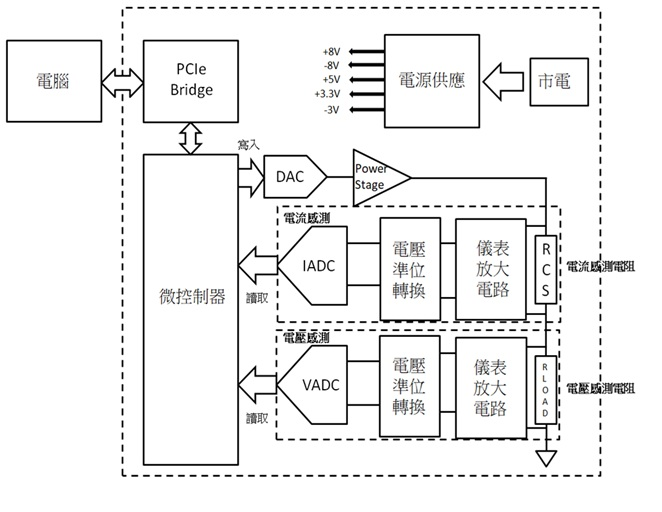

高精度電源提供及量測模組開發
本論文為碩士就讀期間和矽格公司研發團隊共同開發。
系統架構圖

一、SMU 簡介
SMU（Source Measure Unit，電源量測單元）是一種可同時進行「電源輸出（Source）」與 「電性量測（Measure）」的精密量測設備。其可輸出電壓或電流，並同步量測對應的電流或電壓， 具備高精度、低雜訊與高穩定度的特性，廣泛應用於半導體元件測試與電性分析。
二、SMU 在半導體領域的應用
1. 元件 I–V 特性量測
SMU 常用於半導體元件（如 MOSFET、Diode、BJT 等）的 I–V 曲線量測。
2. 漏電流與低功耗量測
在先進製程與低功耗 IC 中，待機電流與漏電流常落於 nA 甚至 pA 等級。
3. 半導體可靠度與老化測試
SMU 可於長時間測試中提供穩定偏壓， 並持續監測電流變化，應用於可靠度測試， 以評估元件於長時間操作下的劣化行為。
4. 晶圓與 IC 測試應用
於晶圓探針測試（Wafer Test）或 IC 驗證階段， SMU 可透過探針或測試治具直接對晶粒供電並量測電性， 協助判斷製程良率與電性分布。
SMU（Source Measure Unit，電源量測單元）是一種可同時進行「電源輸出（Source）」與 「電性量測（Measure）」的精密量測設備。其可輸出電壓或電流，並同步量測對應的電流或電壓， 具備高精度、低雜訊與高穩定度的特性，廣泛應用於半導體元件測試與電性分析。
二、SMU 在半導體領域的應用
1. 元件 I–V 特性量測
SMU 常用於半導體元件（如 MOSFET、Diode、BJT 等）的 I–V 曲線量測。
2. 漏電流與低功耗量測
在先進製程與低功耗 IC 中，待機電流與漏電流常落於 nA 甚至 pA 等級。
3. 半導體可靠度與老化測試
SMU 可於長時間測試中提供穩定偏壓， 並持續監測電流變化，應用於可靠度測試， 以評估元件於長時間操作下的劣化行為。
4. 晶圓與 IC 測試應用
於晶圓探針測試（Wafer Test）或 IC 驗證階段， SMU 可透過探針或測試治具直接對晶粒供電並量測電性， 協助判斷製程良率與電性分布。